အလိုက်ဖက်ဆုံးရာသီခွင်တွဲဖက်များ
Zodiac signsတွေကို Fire signs,Air signs,Earth signsနဲ့ Water signsဆိုပြီးတော့ခွဲထားပါတယ်။ ရာသီခွင်အလိုက် ဘယ်ရာသီခွင်ကတော့ ဘယ်ရာသီခွင်နဲ့ တွဲဖက်ညီလဲဆိုတာကို ယေဘူယျအားဖြင့်ခန့်မှန်းနိုင်သလို တွဲဖက်ညီမှု့နည်းတဲ့ရာသီခွင်တွေကိုလဲ ခန့်မှန်းနိုင်ပါတယ်။ အောက်ဖော်ပြပါအကြောင်းအရာတွေကတော့ Sun sign(မွေးတဲ့အချိန်နေရဲ့တည်နေရာ)ကိုအခြေခံပြီး အဆင့်သတ်မှတ်ထားတာပဲဖြစ်ပါတယ်။
လေနှင့်မီးနဲ့တွေ့တဲ့အခါ မီးတောက်လေးကပိုတောက်လာပါတယ်
Fire signsတွေဖြစ်တဲ့ (Aries, Leo, and Sagittarius)တို့ရဲ့အကောင်းဆုံးတွဲဖက်တွေကတော့ သူတို့နဲ့အတူFire signsတွေအပြင်Air signsတွေဖြစ်တဲ့ (Gemini, Libra, and Aquarius) တို့ဘဲဖြစ်ပါတယ်။ အဲ့တာဆို မီးနဲ့လေ တွေဘယ်လောက်ရာခိုင်နှုန်းထိ တွဲဖက်ညီလဲဆိုတာကို အောက်မှာဖော်ပြပေးထားပါတယ်💌


Aries & Gemini

Aries & Libra

Aries & Aquarius
Leo & Gemini
Leo & Libra
Leo & Aquarius

Sagittarius & Gemini
Sagittarius & Libra
Sagittarius & Aquarius
မြေနဲ့ရေပေါင်းတော့ ရွှံ့လိုနူးညံ့သွားပါလိမ့်မယ်
Earth signs (Taurus, Virgo, and Capricon) တွေအတွက်အဆင်ပြေနားလည်မှုရှိတဲ့အကောင်းဆုံးရာသီခွင်တွေက Earth signsတွေအပြင်Water signsတွေဖြစ်တဲ့ Cancer, Scorpio, and Piscesတို့ဘဲဖြစ်ပါတယ်။ဆိုတော့ ရေနဲ့မြေတွေဘယ်လောက်ရာခိုင်နှုန်းထိ ကိုက်ညီကြလဲ အောက်မှာဖော်ပြပေးထားပါတယ်💌


Taurus & Cancer

Taurus & Scorpio

Taurus & Pisces

Virgo & Cancer
Virgo & Scorpio
Virgo & Pisces

Capricorn & Cancer
Capricorn & Scorpio
Capricorn & Pisces
လိုက်ဖက်ညီမှု့အားနည်းသော ရာသီခွင်တွဲဖက်များ
ရာသီခွင်တွဲဖက်တွေဟာ လိုက်ဖက်ညီတဲ့ တွဲဖက်တွေရှိသလို တစ်ယောက်ပေါ်တစ်ယောက် အဆိပ်အတောက်ဖြစ်စေနိုင်တယ်ဆိုတဲ့ တွဲဖက်တွေကိုလဲ ယေဘူယျအားဖြင့်သတ်မှတ်နိုင်ပါသေးတယ်။ လေနဲ့မီး၊ ရေနဲ့မြေဟာ လိုက်ဖက်ညီမှု့များသလို ဆန့်ကျင်ဘက်အနေနဲ့ မီးနဲ့ရေ၊ မီးနဲ့မြေ အပြင် လေနဲ့မြေ၊ လေနဲ့ရေတွေဟာလဲ မတူညီမှု့များနဲ့ တကျက်ကျက်အခက်တွေ့နေမယ့်အတွဲတွေပဲဖြစ်ပါတယ်။ဒါဟာ sun signအပေါ်အခြေခံထားတာမလို့ ချွင်းချက်အနေနဲ့တော့ရှိနိုင်ပါတယ်။ လိုက်ဖက်ညီမှု့နည်းတဲ့ ရာသီခွင်တွဲဖက်တွေကို အောက်မှာဖော်ပြပေးထားပါတယ်💌


Aries & Cancer
စိတ်မြန်လက်မြန်ရှိတဲ့ Ariesတွေဟာ Cancerရဲ့အချိန်ဆွဲမှု့ကို ဘယ်လိုမှသည်းမခံနိုင်ပါဘူး။Cancerတွေအတွက်ကျ တစ်စုံတစ်ယောက်ကိုယုံကြည်ဖို့ ခက်ခဲပါတယ်။Cancerတွေစဉ်းစားနေချိန်အတွင်းမှာ Ariesတွေရဲ့စိတ်မရှည်မှု့ကြောင့်ငြီးငွေ့လာတက်ပါတယ်။
 

Gemini & Scorpio
စိတ်ကူးပေါက်ရာလျှောက်လုပ်တဲ့ Geminiတွေနဲ့ဘယ်အရာမဆိုတိကျတဲ့ Scorတွေကလည်း အတော်ညှိဖို့ခက်တဲ့အထဲပါပါတယ်။မရေမရာဆို စကော်တွေကအချိန်ကုန်မခံချင်ကြဘူး၊ဂျင်မနိုင်းတွေကလဲ မရေမရာအရမ်းလုပ်ကြပါတယ်။


Leo & Pisces
ကိုယ့်အတွက်ပဲကိုယ်အမြဲကြည့်တဲ့ leoတွေနဲ့ သူများအတွက်အမြဲတွေးပေးတက်တဲ့ piscesတွေကမျှတတဲ့ relationship ရဖို့ခက်ခဲပါတယ်။ခဏခဏပြဿနာတက်နိုင်ပြီး စိတ်ကျေနပ်မှု့အပြည့်အဝရမှာမဟုတ်ပါဘူး။
Virgo & Libra
အရမ်းလက်တွေ့ဆန်တဲ့ Virgoတွေနဲ့ စိတ်ကူးယဉ်ပြီး လေထဲတိုက်အိမ်ဆောက်တက်တဲ့ Libraတွေလဲ အဆင်ပြေဖို့ခက်ခဲကြပါတယ်။Love languageက တော်တော်ကွာတာမို့ ညှိယူဖို့ခက်ခဲမှာပါ။

Taurus & Aquarius
အမြဲ ပုံသေတစ်ခုထဲနဲ့သွားတက်တဲ့ Taurusတွေဟာ Aquariusလိုအသစ်သစ်တွေကို အမြဲစမ်းသပ်ချင်တဲ့သူတွေအတွက် အလွန်ပျင်းစရာကောင်းနိုင်ပါတယ်။ Aquaတွေကို စိတ်ဝင်စားအောင် အမြဲထားနိုင်မှ ဆက်ဆံရေးတစ်ခုမှာ တက်တက်ကြွကြွရှိနေမှာပါ။


Capricon & Sagittarius
အရမ်း seriousဖြစ်တက်တဲ့ cappyတွေနဲ့ အဆင်ပြေသလိုနေတက်တဲ့ saggiတွေကလဲ ခက်ခဲနိုင်ပါတယ်၊Saggiတွေက အိမ်နေရင်း ပုံစံနဲ့အပြင်ထွက်ရင်တောင် အဆင်ပြေပြီးသား၊Cappyတွေက သပ်ရပ်ပြီး စနစ်တကျနေရတာ သဘောကျပါတယ်။